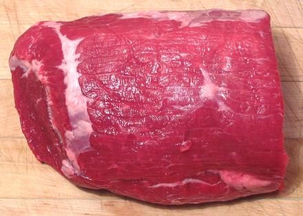

Beef Eye of Round

[#171C, Cuete (Spanish)]
This cut consists of a single oval muscle, which is about the tenderest
part of the Bottom Round. That still isn't all that tender, so salting
and special slow cooking methods have been developed.
The photo specimen, actually half of an Eye of Round, was 2-1/2
pounds, 2-3/4 x 5 inches on the wide face and 6-1/2 inches long.
More on Cuts of Beef.
Cooking:
Several methods have been developed to roast
this chunk of meat and get it tender. Here is one that is reported to
work well.
- Rub the roast liberally with kosher salt (sticks to meat better than
regular salt). Put it in a plastic bag and refrigerate for at least 12
hours, but 24 hours or more is better. Some recipes do not call for
this, but it will keep the meat moister.
- Bring the roast out and rinse it lightly and dry. Then rub with
whatever seasonings you like. If you have salted the roast you don't
need salt in the rub, but the rub should include some olive oil.
- Let the roast sit at room temperature for 1 hour so it's not so
cold. Meanwhile preheat the oven to 500°F/260°C.
- Place the roast on a rack over a shallow pan. When you are sure the
oven is at 500°F/260°C, slide the roast into the center of the
oven and close the door.
- Immediately reduce the heat to 475°F/245°C and roast for
7 minutes per pound of roast (26 minutes for a 3-1/2 pound roast).
- Do not open the oven door. Turn off the oven and let the roast stay
in there for 2-1/2 hours. DO NOT open the oven door during this time.
- Confirm that the roast has reached an internal temperature of
145°F/63°C. One of those digital thermometers with a long cable
that measure with the door closed is very helpful for this operation.
- Bring out the roast. Let it rest lightly tented with foil for
about 10 minutes. Slice and serve.
Some other recipes salt as above, sear all over in a large skillet
and roast in a 225°F/107°C oven for 1 to 1-1/4 hours or until
115°F/46°C in the center. The oven is then turned off and the
roast left in (without opening the door) until the center temperature
rises to 125°F/52°C.
Yet other recipes follow the first method but add the pan searing step
from the second method.
ab_knuckz 131028 - www.clovegarden.com
©Andrew Grygus - agryg@clovegarden.com - Photos
on this page not otherwise credited © cg1
- Linking to and non-commercial use of this page permitted